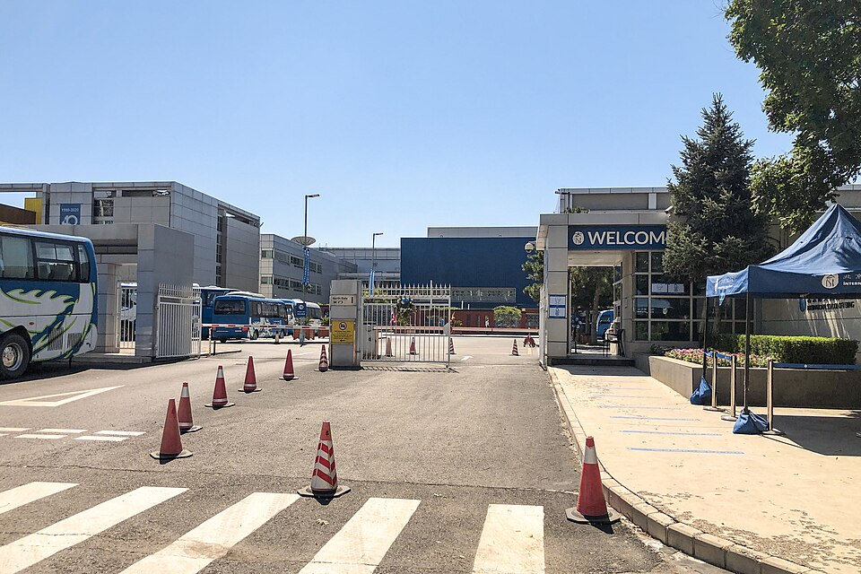

인터내셔널 스쿨 오브 베이징 북문 · 사진: N509FZ / Wikimedia Commons, CC BY-SA 4.0
인터내셔널 스쿨 오브 베이징(International School of Beijing, ISB) — 졸업장이 두 갈래인 학교, G11에서 무엇을 고르나
1. 어떤 학교인가
· 설립 — 1980년에 세워진 것으로 알려져 있습니다. 베이징의 국제학교 중 역사가 오래된 축으로 안내됩니다.
· 위치 — 베이징 북동쪽 순이구(Shunyi)의 캠퍼스로 안내됩니다. 순이구는 공항 방면으로 이어지는 지역이고, 외국인 주재원 거주 단지가 모여 있는 곳으로 알려져 있습니다.
· 학년 — 유아 과정(Early Years)부터 G12까지를 한 학교에서 받는 구조로 안내됩니다.
· 교육과정 — IB 디플로마가 G11·G12에 개설되는 것으로 안내되며, 중국어 프로그램을 별도로 운영하는 것으로 알려져 있습니다. 고학년에서 학교 자체 졸업장과 IB 디플로마가 함께 안내되는 점이 이 학교의 특징입니다.
· 인증 — 미국의 NEASC, CIS, 그리고 중국 내 기관의 인증을 받은 것으로 안내됩니다.
※ 학비·정원·합격률·재학생 수처럼 해마다 바뀌는 수치는 이 글에서 다루지 않습니다. 개설 과정과 학년 구성도 연도에 따라 안내가 달라질 수 있으니 올해 요강을 직접 확인하세요.
2. 핵심 — 마지막 2년의 길이 하나가 아닙니다
많은 학교는 "우리는 IB 학교다" 또는 "우리는 미국식이다"처럼 마무리가 한 가지로 정해져 있습니다. 그래서 학부모님은 학교를 고르는 순간 아이의 마지막 2년도 같이 정해진다고 생각하십니다. 그런데 이 학교는 학교를 고른 뒤에도 한 번 더 고를 것이 남아 있는 구조로 안내됩니다.
학교 안내를 정리하면 이렇습니다. IB 디플로마 전 과정을 이수하는 길이 있고, 디플로마를 택하지 않는 학생은 IB 과목을 표준 수준(SL)이나 고급 수준(HL)으로 골라 들으면서 학교 과목과 합쳐 자신의 시간표를 짜는 길이 있습니다. 즉 IB를 하느냐 마느냐의 문제가 아니라 IB를 통째로 하느냐 부분으로 쓰느냐의 문제입니다.
| 항목 | IB 디플로마 전 과정 | 학교 졸업장 + IB 과목 선택 |
|---|---|---|
| 과목 짜는 방식 | 정해진 영역에서 고루 채움 | 관심 과목 쪽으로 몰아 짜기 쉬움 |
| 글쓰기 부담 | 긴 글·장기 과제가 여러 과목에 동시에 | 고른 과목 수만큼만 |
| 시간 관리 | 기한이 한 시기에 몰림 | 상대적으로 분산 |
| 준비 시작 | G9·G10에 이미 갈립니다 | G10에 과목별로 판단 |
| 확인할 것 | 지망 국가·대학이 요구하는 형태 — 학교 진학 카운슬러와 함께 확인 | |
※ 위 표는 두 길의 성격 차이를 정리한 것입니다. 구체적인 이수 요건과 대학별 인정 범위는 해마다·나라마다 다르므로 이 글로 판단하지 마시고 학교 안내와 진학 카운슬러를 통해 확인하세요.
여기서 오해가 하나 생깁니다. "디플로마를 안 하면 쉬운 길"이라는 생각입니다. 그렇지 않습니다. 디플로마를 택하지 않는 쪽은 스스로 설계해야 할 것이 늘어납니다. 어떤 과목을 어느 수준으로 들을지, 지망 대학이 요구하는 조건을 무엇으로 채울지를 가족과 학생이 직접 판단해야 하기 때문입니다. 정해진 틀이 없다는 건 자유롭다는 뜻이자, 빠뜨려도 아무도 대신 채워 주지 않는다는 뜻입니다.
3. 베이징에서 함께 확인할 것 둘
① 중국 본토의 국제학교는 "자격"부터입니다
중국 본토의 국제학교 중에는 외국 국적 자녀를 위한 학교라는 별도 범주로 운영되는 곳들이 있습니다. 이 경우 학교가 받고 싶어도 받을 수 없는 학생이 생깁니다. 교육 당국이 정한 등록 자격 안에서만 등록이 가능하기 때문입니다. 커리큘럼을 아무리 잘 읽어도, 우리 가족이 그 자격에 해당하는지가 먼저입니다. 자격 구분의 형태는 상하이 사례를 정리한 SCIS 상하이 — 중국 국제학교는 "자격"부터에 적어 두었습니다. 다만 표현과 요구 서류가 학교·연도마다 달라지므로 입학처에 올해 기준으로 직접 문의하세요.
② 순이구라는 생활권
베이징은 도시가 넓습니다. 순이구에는 국제학교가 여럿 모여 있습니다. 이 학교도, 덜위치 칼리지 베이징도 순이구 쪽으로 안내됩니다. 그래서 회사 사택이 순이구 생활권이면 선택지가 넓어지고, 도심 서쪽·남쪽으로 정해지면 매일의 이동이 아이의 저녁 시간을 먹습니다. 거주지를 아직 고를 수 있는 단계라면 학교를 먼저 정하고 집을 그 생활권에 맞추는 순서가 가능합니다. 베이징의 다른 선택지로는 IB 전 과정을 운영하는 웨스턴 아카데미 오브 베이징(WAB)이 있습니다.
4. 한국(주재원) 학생·학부모가 겪는 어려움
· 고르는 시점을 늦게 안다. G11에 무엇을 할지는 G9·G10의 과목 선택과 성적이 이미 상당 부분 결정합니다. G11 원서 시즌에 알게 되면 되돌릴 수 있는 것이 적습니다.
· "IB는 무조건 어렵다"는 소문에 휘둘린다. 어려움의 정체는 난이도가 아니라 기한이 몰리는 구조인 경우가 많습니다. 아이가 장기 과제를 쪼개어 처리하는 습관이 있는지가 실제 변수입니다. → IB DP 점수 완전정복
· 생활 영어는 느는데 교과 영어가 안 는다. 회화가 빨리 늘어 부모님은 안심하시는데, 점수는 교과를 읽고 설명하는 영어에서 갈립니다. → EAL(영어 지원 프로그램) · Learning Support
· 수학은 계산이 아니라 용어와 서술에서 막힌다. 한국에서 이미 배운 내용인데 알지브라·지오메트리 용어가 영어라 못 푸는 경우가 흔합니다. 답만 적으면 과정 점수를 받지 못합니다.
· 성적이 어떻게 가는지 안 보인다. 학교 플랫폼에는 무엇을 냈는가는 보이는데 왜 그 점수인가는 안 보입니다. → 학습 플랫폼·시간표 읽는 법 · 성적표 읽는 법 · 형성평가·총괄평가 구분
· 중국어가 별도로 붙는다. 중국 소재 학교에서는 중국어 과목이 시간표에 들어갑니다. 영어·수학에 쓸 시간이 그만큼 줄어든다는 뜻이라 학기 초에 시간 배분을 정해 두는 편이 좋습니다.
5. 그래서 이렇게 준비합니다
🧭 먼저 — "언제 고르는가"를 달력에 적는다
종이에 두 줄만 적어 보세요. "우리 아이는 지금 몇 학년인가." 그리고 "G11 과목을 정하는 시기는 언제인가." 두 줄 사이의 개월 수가 곧 준비할 수 있는 시간입니다. 이 숫자가 12개월 이상이면 과목 선택의 폭을 넓히는 준비가 가능하고, 6개월 이하면 지금 성적이 나오는 과목을 지키는 쪽이 현실적입니다.
📖 영어과외 — 긴 글을 "쪼개는" 훈련부터
고학년 IB 과목에서 점수를 가르는 것은 글의 구조와 기한 관리입니다. 주장·근거·해석이 한 문단 안에서 어떤 순서로 놓이는지를 익히고, 큰 과제를 주 단위로 쪼개어 제출 전까지의 일정을 만드는 훈련을 함께 합니다. (영어 공부법 참고)
📐 수학과외 — 수준 선택 전에 "지금 어디가 비었는지"
고급 수준을 택할지 표준 수준을 택할지는 취향이 아니라 현재의 구멍으로 정합니다. 아이가 이미 아는 개념에 영어 용어를 다시 붙여 주는 작업부터 하고, 풀이 과정을 영어 문장으로 적는 습관을 들입니다. IB 수학은 AA와 AI로 갈리므로 고등 진입 전에 어느 쪽이 맞는지도 함께 봅니다. (알지브라 공부법 · IB 수학 AA·AI 참고)
📅 편입이라면 — 합류 학년이 선택지를 정합니다
중간에 옮겨 오는 학생은 진도의 공백보다 평가 방식의 공백에서 더 고생합니다. 특히 G10 이후에 합류하면 마지막 2년의 선택지가 좁아질 수 있으니, 합류 전에 그 학년에서 무엇을 고를 수 있는지를 입학처에 먼저 물어보세요. → 편입·전학 총정리 · 오픈데이·학교 방문 준비법
6. 베이징의 강점 — 시차 한 시간의 화상과외
베이징은 한국보다 한 시간 느립니다. 베이징 오후 4시가 한국 오후 5시라, 아이의 방과 후 시간이 한국 강사진의 수업 시간과 거의 그대로 맞습니다. 순이구처럼 도심에서 떨어진 생활권일수록 이 장점이 커집니다. 수업을 위해 다시 나갈 필요가 없기 때문입니다. 아이의 실제 과제와 학교가 준 채점 기준을 화면에 놓고 "어느 항목에서 깎였는지"부터 확인하는 방식이 가장 빠릅니다. 중국 내 다른 도시 사정은 상하이 국제학교 과외와 상하이 수학학원·영어학원 찾기에 정리해 두었습니다.
정리
인터내셔널 스쿨 오브 베이징은 1980년 개교로 알려진 순이구의 국제학교이고, 유아 과정부터 G12까지를 한 학교에서 받습니다. 다른 학교와 다른 점은 마지막 2년의 길이 하나로 정해져 있지 않다는 것입니다. 그래서 이 학교를 보실 때 질문은 셋으로 좁혀집니다. "우리 가족이 등록 자격에 해당하는가." "순이구 생활권에서 통학이 가능한가." 그리고 "아이가 IB 디플로마를 통째로 감당할 아이인가, 골라 쓰는 편이 맞는 아이인가." 셋째 질문은 G9·G10에 이미 답이 만들어집니다. 30분 무료 상담으로 우리 아이가 지금 어느 구간에 있는지부터 함께 짚어 보세요.